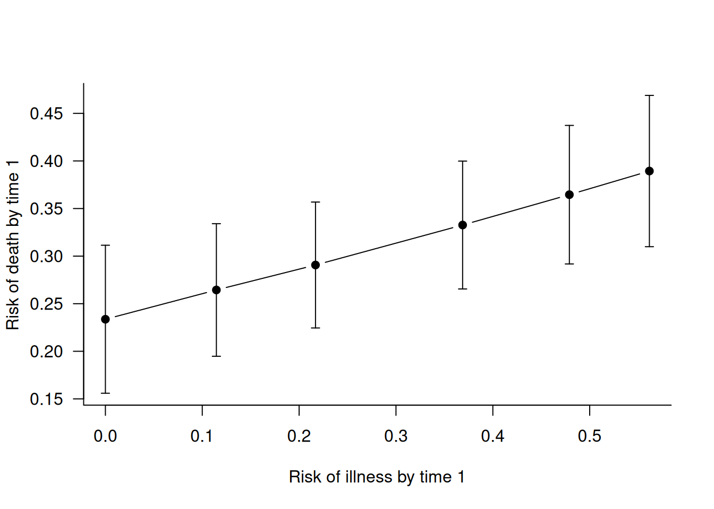

MultiStateTMLE estimates causal parameters of multistate event processes under stochastic intensity interventions: hypothetical interventions that scale the intensity of one event process (for example, an illness) by a factor alpha, and ask how the risk of another process (for example, death) would change. Estimation uses targeted maximum likelihood estimation (TMLE), which updates an initial fit of the hazards so that the resulting estimator is efficient and comes with influence curve based standard errors.
This vignette walks through the main workflow:
- Fit the initial hazard models with
fit_initial(). - Estimate a target, such as
risk(death), under a fixed intensity scaling,scale_intensity(), withtmle_estimate(). - Trace how the outcome risk depends on the exposure risk with
intervention_curve(). - Calibrate the intervention to a target exposure risk with
calibrate(). - Decompose a treatment effect with
calibrated_contrasts().
The data
The package ships with illness_death, simulated event history data for 150 individuals at risk of an illness z, which can occur at most once, and of death. The illness raises the hazard of death, and both hazards depend on a baseline covariate L0. Follow-up is subject to censoring.
head(illness_death)
#> id time event L0
#> 1 1 1.0836890 death 0.2724785
#> 2 2 0.6539194 death 0.3572619
#> 3 3 0.1212156 death -0.8616620
#> 4 4 1.1416233 z 0.8083350
#> 5 4 3.6778032 death 0.8083350
#> 6 5 1.0962284 z 0.6127352The data are in long format with one row per event and the columns:
-
id: individual identifier. -
time: event time. -
event: the name of the process that jumped, here"z","death"or"censoring". - Baseline covariates, here
L0.
This is the format that simevent::simulate_events() returns, so simulated data can be passed straight to fit_initial().
An individual who dies without falling ill has a single row, while one who falls ill and later dies has two rows. For example, individual 3 dies, while individual 4 falls ill and then dies:
Step 1: Fit the initial hazard models
fit_initial() fits one hazard model per event process, expands the data to the grid of observed event times up to the horizon tau, and builds the discrete state space that the targeting step works on.
Each process gets a formula in models, with the process name on the left and the covariates of its hazard on the right. Other processes can be used as covariates by name, giving their number of events so far: here the death hazard depends on whether the individual has fallen ill (z). The illness can occur at most once, which hazard_model() expresses with limit = 1. Every event in the data needs a model, including censoring.
fit <- fit_initial(
illness_death,
models = list(
hazard_model(z ~ L0, limit = 1),
death ~ L0 + z,
censoring ~ L0
),
tau = 1
)
fit
#> Initial fit of 150 individuals up to tau = 1
#>
#> name type model at_risk
#> <char> <char> <char> <lgcl>
#> 1: z one_jump z ~ L0 TRUE
#> 2: death terminal death ~ L0 + z FALSE
#> 3: censoring terminal censoring ~ L0 FALSEThe type of each process is inferred from the data: death and censoring end follow-up, and the illness occurs at most once.
By default the hazards are fitted with Cox models. hazard_model() can also restrict when individuals are at risk with a condition on the processes, such as at_risk = ~ z == 0, and fit = "hal" uses the highly adaptive lasso instead (experimental).
Step 2: Estimate under a fixed intervention
tmle_estimate() estimates a target parameter under an intervention. The target is given by risk(), here the risk of death by time tau. Without an intervention, this is the observed risk of death by time 1:
observed <- tmle_estimate(fit, risk(death))
observed
#> TMLE estimate of risk(death)
#> without intervention
#>
#> target estimate se lower upper
#> <char> <num> <num> <num> <num>
#> 1: death 0.3250469 0.03906316 0.2484845 0.4016093
#>
#> Initial estimate: 0.325; converged after 1 iterationsThe printed table gives the targeted estimate with its standard error and a 95% confidence interval, and it is stored as observed$estimate. The intervention scale_intensity(z = 0.5) halves the intensity of the illness:
halved <- tmle_estimate(fit, risk(death), scale_intensity(z = 0.5))
halved
#> TMLE estimate of risk(death)
#> under scale_intensity(z = 0.5)
#>
#> target estimate se lower upper
#> <char> <num> <num> <num> <num>
#> 1: death 0.3040549 0.03853505 0.2285276 0.3795823
#>
#> Initial estimate: 0.3124; converged after 2 iterationscoef() and confint() extract the estimate and confidence intervals at other levels:
A factor of 0 removes the illness altogether, while a factor above 1 increases its intensity. The factor can also vary over time, given as a formula in time, baseline covariates and the processes:
tmle_estimate(
fit,
risk(death),
scale_intensity(z = ~ ifelse(time < 0.5, 0.5, 1))
)$estimate
#> target estimate se lower upper
#> <char> <num> <num> <num> <num>
#> 1: death 0.3163871 0.03873481 0.2404683 0.392306Step 3: Trace the intervention curve
An intensity scaling is not always easy to interpret. It is often more natural to ask what happens to the outcome when the risk of the exposure is changed by a given amount. intervention_curve() evaluates a grid of scalings alpha of the exposure’s intensity and, for each, estimates both the exposure, here the risk of the illness, and the target:
curve <- intervention_curve(
fit,
risk(death),
exposure = risk(z),
alpha = c(0, 0.25, 0.5, 1, 1.5, 2)
)
curve$estimate
#> alpha target exposure_estimate exposure_se estimate se lower
#> <num> <char> <num> <num> <num> <num> <num>
#> 1: 0.00 death 0.00000000 0.000000000 0.2820265 0.03975707 0.2041041
#> 2: 0.25 death 0.04391205 0.009617945 0.2933270 0.03919098 0.2165141
#> 3: 0.50 death 0.08486244 0.017876912 0.3040549 0.03899060 0.2276348
#> 4: 1.00 death 0.15891283 0.031321396 0.3250469 0.03915660 0.2483014
#> 5: 1.50 death 0.23212809 0.041662682 0.3367827 0.04049368 0.2574166
#> 6: 2.00 death 0.29250854 0.049801208 0.3584115 0.04287637 0.2743753
#> upper
#> <num>
#> 1: 0.3599489
#> 2: 0.3701399
#> 3: 0.3804751
#> 4: 0.4017924
#> 5: 0.4161489
#> 6: 0.4424476Plotting the target risk against the exposure risk shows how the risk of death responds to the risk of illness:
ce <- curve$estimate
plot(
ce$exposure_estimate,
ce$estimate,
type = "b",
pch = 19,
ylim = range(ce$lower, ce$upper),
xlab = "Risk of illness by time 1",
ylab = "Risk of death by time 1"
)
arrows(
ce$exposure_estimate,
ce$lower,
ce$exposure_estimate,
ce$upper,
angle = 90,
code = 3,
length = 0.04
)
Step 4: Calibrate the intervention
calibrate() describes a calibrated intervention: the scaling of the exposure’s intensity is chosen so that the exposure attains a given value, and the target is estimated under it. The value is given by a calibration rule:
-
level(theta): the exposure equalstheta. -
absolute_change(delta): the exposure isdeltaplus its observed value. -
relative_change(rho): the exposure isrhotimes its observed value.
For example, the risk of death if the risk of illness were reduced to 80% of its observed value:
cal <- tmle_estimate(fit, risk(death), calibrate(risk(z), relative_change(0.8)))
cal
#> TMLE estimate of risk(death)
#> under calibrate(risk(z), relative_change(0.8))
#>
#> quantity estimate se lower upper
#> <char> <num> <num> <num> <num>
#> 1: alpha 0.7927238 0.00995552 0.77321133 0.8122363
#> 2: theta 0.1271303 0.02505712 0.07801922 0.1762413
#>
#> Estimates under the calibrated intervention:
#> target estimate se lower upper se_crude
#> <char> <num> <num> <num> <num> <num>
#> 1: death 0.3199203 0.03864198 0.2441835 0.3956572 0.03866085The first table gives the calibrated scaling alpha and the exposure risk theta it attains, and the second the risk of death under it. Its standard error se accounts for alpha being estimated, whereas se_crude treats it as known.
The target can also be the expected years of life lost before tau, with years_lost(), while the exposure is still calibrated on its risk:
tmle_estimate(
fit,
years_lost(death),
calibrate(risk(z), relative_change(0.8))
)$estimate
#> target estimate se lower upper se_crude
#> <char> <num> <num> <num> <num> <num>
#> 1: death 0.1644942 0.02295448 0.1195042 0.2094842 0.02295436Step 5: Decompose a treatment effect
With a baseline treatment A0, the total effect of treatment on the outcome can be split into the part that goes through its effect on the exposure and the remainder. The calibrated intervention sets the treated individuals’ exposure risk to what it would have been under placebo, and calibrated_contrasts() then decomposes the total effect into:
- a mediated contrast: treatment versus the calibrated intervention, and
- a calibrated contrast: the calibrated intervention versus placebo.
illness_death has no treatment, so for illustration we add a randomised treatment that has no actual effect. The treatment model is given in treatment_model, and fit_initial() then prepares estimates under both treatment values, a = 0 and a = 1.
set.seed(1)
treated <- illness_death
a0 <- rbinom(max(treated$id), 1, 0.5)
treated$A0 <- a0[treated$id]
fit_treated <- fit_initial(
treated,
models = list(
hazard_model(z ~ L0 + A0, limit = 1),
death ~ L0 + A0 + z,
censoring ~ L0
),
tau = 1,
treatment_model = A0 ~ L0
)The contrasts are computed from the influence curves that each fit returns. In the calibrated arm we set a = 1 and calibrate to a relative change of 1 from the risk of illness under placebo, reference_a = 0, so the risk of illness under treatment is calibrated to equal that under placebo:
treatment_fit <- tmle_estimate(fit_treated, risk(death), a = 1)
placebo_fit <- tmle_estimate(fit_treated, risk(death), a = 0)
calibrated_fit <- tmle_estimate(
fit_treated,
risk(death),
calibrate(risk(z), relative_change(1), reference_a = 0),
a = 1
)
calibrated_contrasts(treatment_fit, placebo_fit, calibrated_fit)
#> Decomposition of the effect of a on death into mediated and calibrated contrasts
#>
#> target contrast estimate se lower upper
#> <char> <char> <num> <num> <num> <num>
#> 1: death total -0.1405813 0.07724416 -0.29197704 0.01081449
#> 2: death mediated -0.0234265 0.01632300 -0.05541899 0.00856599
#> 3: death calibrated -0.1171548 0.08141345 -0.27672220 0.04241266The treatment was randomised without any effect, so the confidence intervals of all three contrasts cover zero, as expected.
Further reading
- The function reference documents further options, such as recurrent targets, only counting events in some states (
risk(death, when = ~ z == 0)), only counting first events (only_first), and intervening on several processes at once (scale_intensity(z = 0.5, w = 2)). - To simulate multistate event history data, see the simevent package.